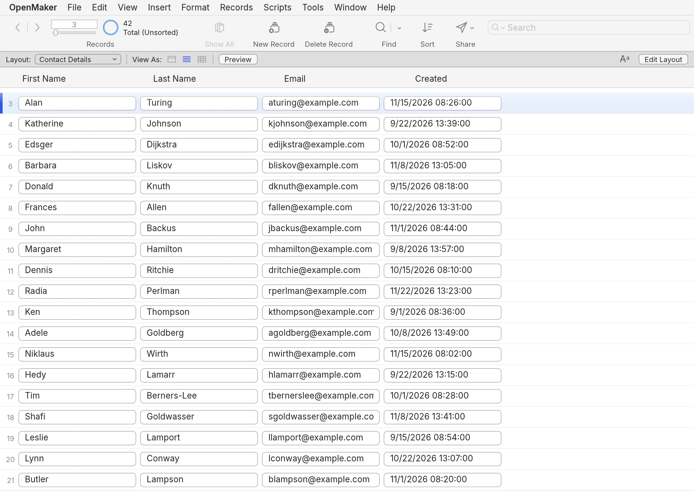
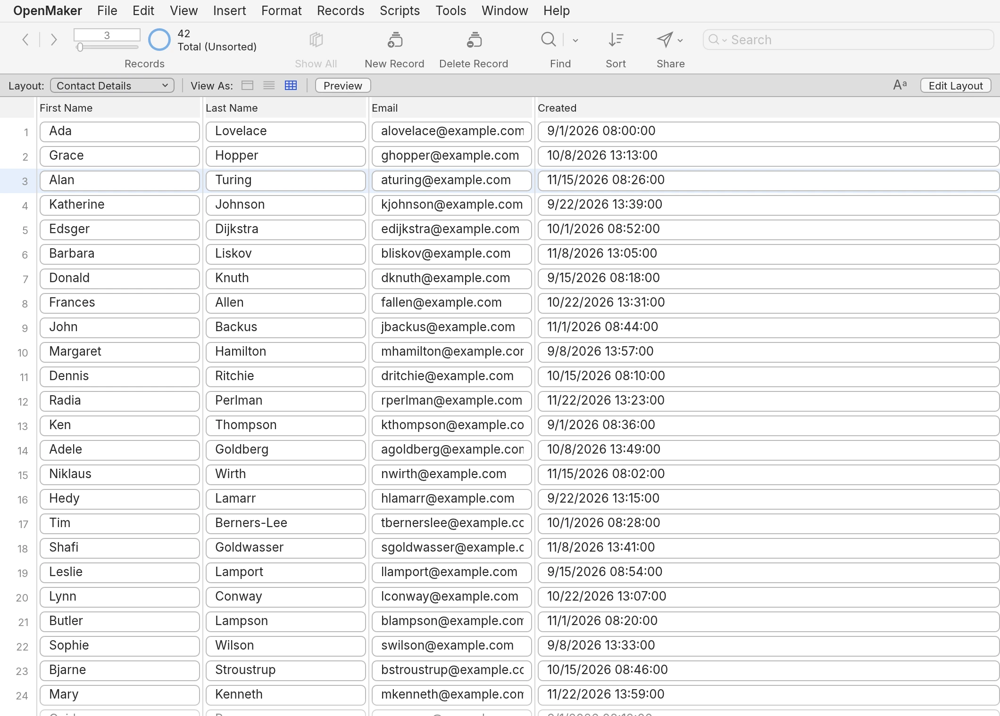
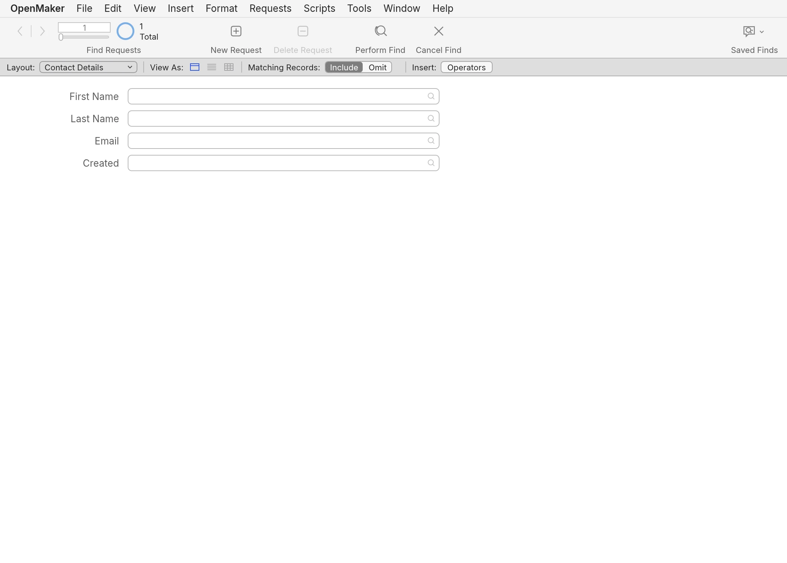
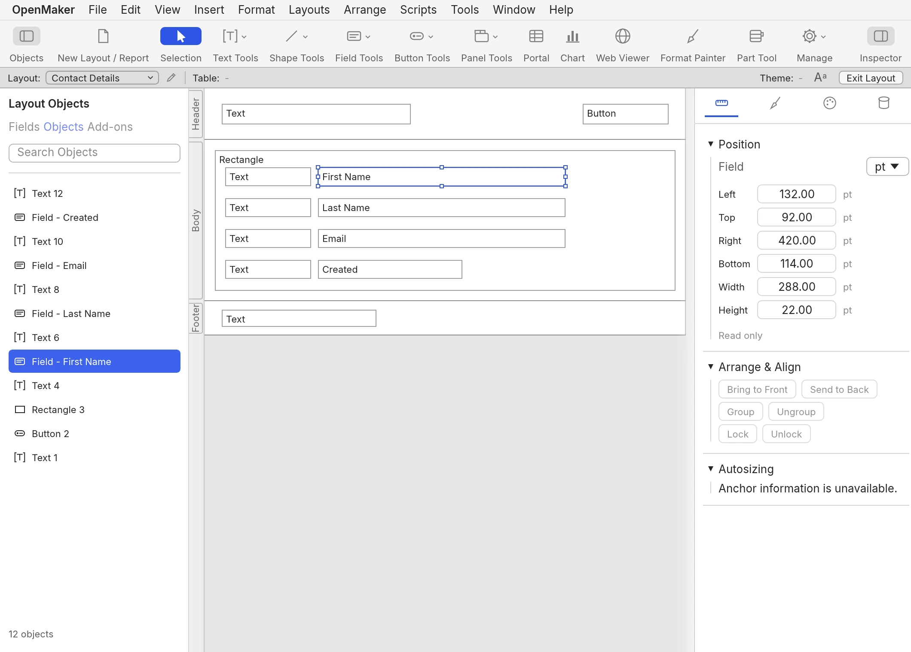

The open-source client and server for FileMaker solutions.
OpenMaker opens your .fmp12 files, on your computer or hosted by FileMaker Server, with Browse, Find, Layout and Preview modes as FileMaker Pro 26 has them. OpenMaker Server hosts the same files for FileMaker Pro.

Bring your own files.
OpenMaker doesn't convert or import your solution. It reads and writes the same .fmp12 files and speaks the same network protocol, so FileMaker Pro and OpenMaker can work side by side.
- No conversion or export step.
- Every byte it doesn't understand is kept.
- A FileMaker license is needed only for FileMaker Server.
The modes you already know.
OpenMaker draws FileMaker Pro's chrome: menus, the status toolbar, the layout bar and its dialogs. The layouts inside the window are your file's own design, decoded and rendered from the file.

Browse
Work with records in Form, List and Table view, in the layout's theme and styles.
- Portals, tab and slide panels, popovers, button bars
- Conditional formatting, hide conditions, anchoring
- Create, edit, duplicate and delete, with auto-enter and validation
- Not yet: the layout's own Table view columns and parts

Find
Find requests, sorts and relationship joins run as query programs, on indexes and without them.
- Find, omit, constrain, extend, Show All
- Sort Records, in the file's own collation
- Index keys found by binary search
- Not yet: sorting by a related field, non-English index keys

Layout
The developer tools are incomplete, but they save what they change in FileMaker's own formats.
- Canvas, Objects and Inspector; place fields and buttons
- Manage Layouts, Script Workspace, Manage Database
- Schema edits in FileMaker Pro's schema transaction
- Not yet: editing security or value lists; Themes, Custom Functions
Down to the quirks.
Calculations, scripts, SQL and finds are Rust implementations of FileMaker's behavior. The same engines run in the desktop client and in OpenMaker Server, and each is checked against FileMaker wherever it can be measured.
Calculations in FileMaker's decimal arithmetic
The function library runs on decimal numbers, as FileMaker's does, and formats results the way FileMaker formats them. It matches FileMaker Server's engine on recorded test vectors.
No floating-point drift, no leading zero, no -0: what FileMaker does, OpenMaker does.
Scripts and triggers
Control flow, errors, variables, transactions and triggers. A step OpenMaker can't run yet fails with error 3, as FileMaker's unsupported steps do.
Finds and sorts
Query programs over the file's indexes, with a bound on the work one request may cause.
ExecuteSQL
FileMaker's SQL dialect over your tables, from calculations and scripts.
Preview, print and export
Preview, print and save reports as PDF; import and export CSV and Excel; Insert from URL.
Containers
Storage, upload and thumbnails on the server; container data in calculations and scripts.
Let a coding agent work on your solution.
FileMaker development as typed commands, one catalog shared by a command-line tool and an MCP server. Agents read a solution's scripts, tables and layouts, plan an edit, apply it, and run scripts to see what it did.
- Plans write nothing. Each change can be planned first, with the diff it would make.
- Revisions, not races. An edit names the revision it was planned on. If someone changed it since, the answer is a conflict, not an overwrite.
- Writes are verified. Every write is read back over a new connection.
- Errors are typed.
conflict,locked,unsupported: an agent knows what happened and whether anything was written.
Pre-alpha, and honest about it.
The goal is 1:1 compatibility with FileMaker. Much of it is still partial or missing; this is where each area stands. Try OpenMaker on a copy of your files.
Connect, open and log in to FileMaker Server and OpenMaker Server over mutual TLS; reconnect after a lost connection. Reconnecting is manual and loses the session's locks and script state.
Decimal arithmetic and the function library, matched against FileMaker Server. 20 functions missing (AI, location, Furigana).
Open, edit and save, with the file's own accounts and privilege sets. No encrypted files, Save a Copy or Recover; read-only on Windows.
Themes, styled text, portals, panels, popovers, conditional formatting, container pictures. Table view lacks the layout's columns, sub-summaries, header and footer.
Create, edit, duplicate, delete, in portal rows too; save-conflict recovery. Some rules and lookups still make a table read-only.
Finds, sorts and joins through query programs; Quick Find. No sorting by a related field; non-English index keys.
Related fields and portals in sort and filter order; related records edited and created in portal rows. Some portal row buttons take no clicks.
Storage, upload, server thumbnails, Insert Picture/File; Browse draws pictures and PDFs. No Insert PDF or Audio/Video, and no file references.
146 of 210 desktop steps, including every step the starter solutions use. No Send Mail, plug-ins, accounts or AI steps.
CSV and Excel, Save Records as Excel, Insert from URL. No ODBC, XSLT, or import from FileMaker files.
One-column reports with summaries and sliding. Multi-column reports; Windows printing.
WebKitGTK with the JavaScript script bridge, in Form and List view. Linux only; macOS and Windows show a note.
Menus, status toolbar, layout bar, the four modes, windows, cards and dialogs. Data-entry and Format commands disabled in Browse.
Layout mode, Manage Layouts, Script Workspace, Manage Database. Value Lists and Security read-only; no Themes or Custom Functions.
Each file's own accounts, locally and on OpenMaker Server, with privilege sets enforced. OpenMaker Server refuses custom sets; accounts can't be edited.
Hosts FileMaker Pro 26; schedules, backups, Admin Console and Admin API. Rewrites the whole file per change.
Linux (Ubuntu) first; the crates are portable. Packages only for Ubuntu 24.04 on amd64; no releases yet.
A clean-room subset of 49 MBS commands: idle scripts, dialogs, files and PDFs. The full MBS feature set is a longer-term goal.
Inspects solutions; edits script steps, fields, layouts and objects on OpenMaker Server. No edits on FileMaker Server or local files.
What alpha means.
People who use FileMaker can open their local and hosted solutions on Linux and do everyday work with nothing lost, and developers can build most ordinary solutions. FileMaker Pro's starter solutions and files hosted by FileMaker Server are the first test.
- Open hosted and local files with their own accounts, privilege sets enforced.Now: all six starters open locally and on OpenMaker Server; on FileMaker Server they are not measured yet, nor are hosted privilege sets.
- Browse every starter layout as FileMaker Pro shows it, in Form, List and Table view, containers included.Now: 503 of 504 layout objects are drawn; the look is compared with FileMaker Pro by screenshots only.
- Find and sort: find, omit, constrain, extend, Quick Find, sort, Show All.Now: the starters' find and sort tests pass.
- Edit: create, edit, duplicate and delete records, related records in portals included, with no layout read-only.Now: every starter table is writable and every changeable field object editable.
- Script: scripts, buttons and triggers run without error 3.Now: every step the starters use has an implementation; the scripts are not yet run end to end.
- Output: preview, print and save reports as PDF; import and export CSV and Excel.Now: every starter report layout is accepted, and the CSV and Excel steps pass; output is not compared with FileMaker Pro's.
- Build tables, fields, layouts and scripts, by hand or with an agent, and use the result in FileMaker Pro.Now: the developer tools' build steps pass on every starter; om-author does 14 of 23, on OpenMaker Server only.
- Trust: no crash or data loss; every file OpenMaker writes passes FileMaker's consistency check and opens in FileMaker Pro.Now: records written in every starter table survive reopening; the written files passed the check and opened in FileMaker Pro at an earlier commit.
Built from specifications, not decompiled code.
Every behavior OpenMaker implements is first written down as a spec of FileMaker's formats, protocol or behavior, with its evidence: captured traffic, oracle runs and observation. No code is copied or translated from FileMaker.
Never lose data
Codecs keep every byte they don't understand and re-encode unchanged structures exactly. When in doubt, OpenMaker refuses the edit.
Measured against FileMaker
Behavior is compared with FileMaker Pro and Server. What is inferred rather than measured is labeled as such.
Fails the way FileMaker fails
What isn't supported yet returns FileMaker's error, never a silent success.
Input is hostile
Files and network messages are bounds-checked and capped. unsafe is forbidden across the workspace.
unsafeYour solutions, on software you can read.
OpenMaker is MIT licensed and built in the open. Build it, open a copy of a solution, and file what breaks.